Interior
By Aljay Leodones · Living room study
Function approved by the owner. This is an estimated layout and custom object study. Final materials, final room construction, game asset export, and publication require later reviews.
Photo and Blender layout study
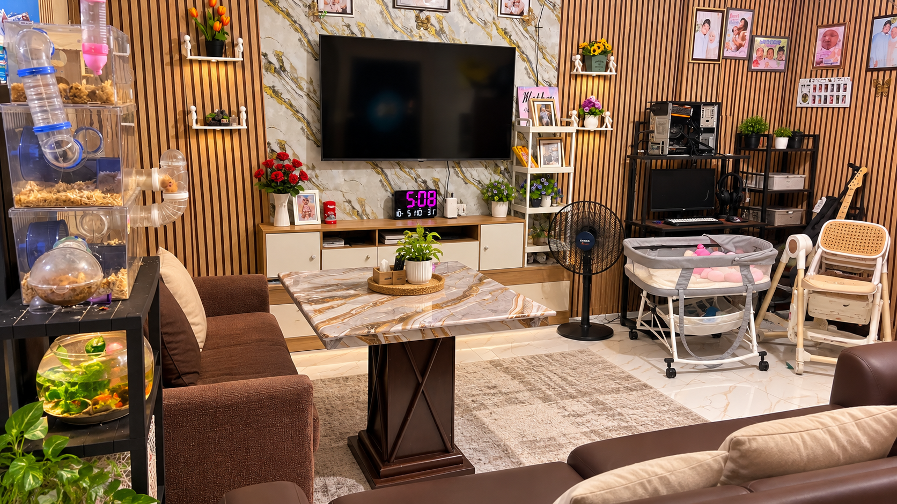
Supplied reference
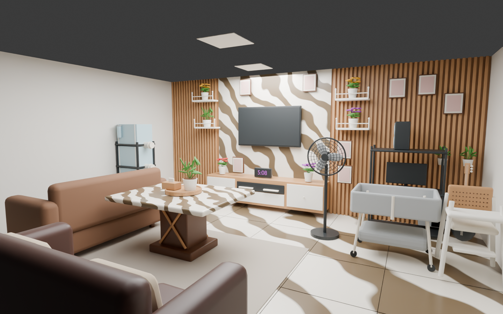
Actual procedural Blender geometry; study materials and blank photo inserts
Estimated room bounds: 6.6 m wide × 5.4 m deep × 2.9 m high. The owner approved estimates. The visible wall, furniture relationships, and room objects are the target. Unseen side walls, rear wall, ceiling, and object backs need inference; exact 1:1 measurements cannot be established from this photo.
The left fabric sofa faces the table; the foreground leather sofa faces the TV. The table is the center of the seating group. The desk, crib, high chair, fan, and pet enclosure remain separate. Floor, walls, and ceiling are fixed room structure; furnishings and movable decor will use physics. Wall-mounted props can be detached when grabbed.
Engineering plans
Object marks come from top-down orthographic renders of the actual authored meshes. Text stays outside the plan images. Coordinates below use Blender Z up, with +Y toward the TV wall.
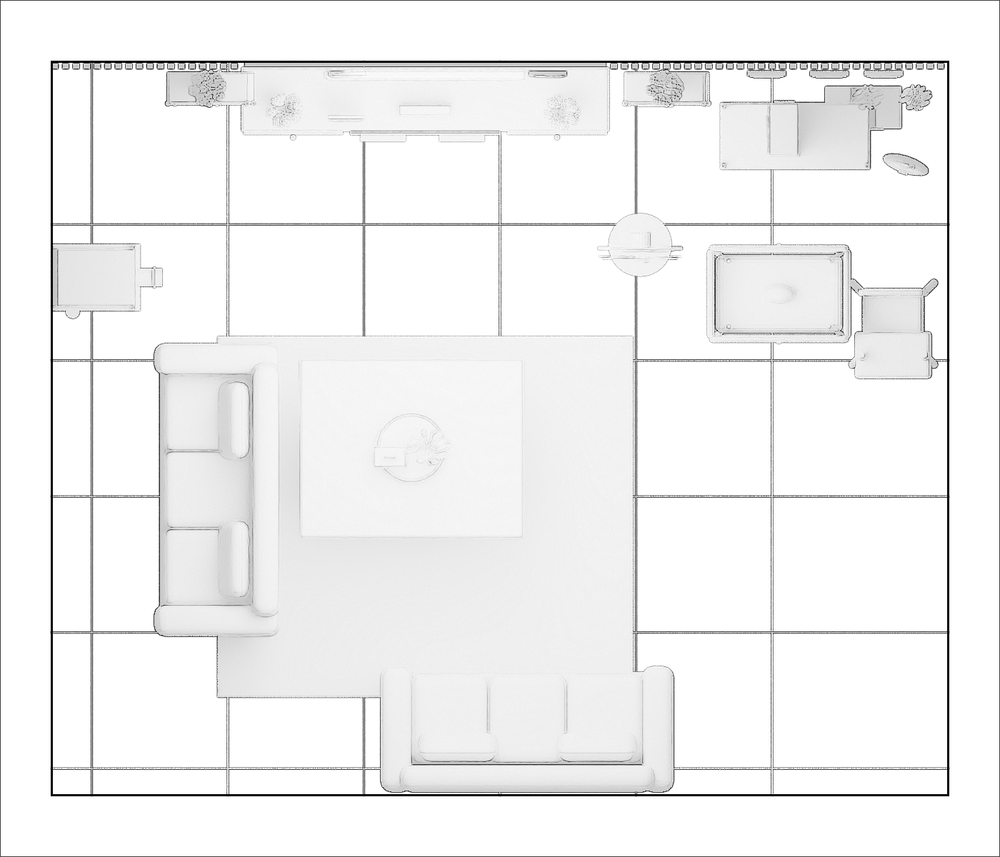
Lower-room layer
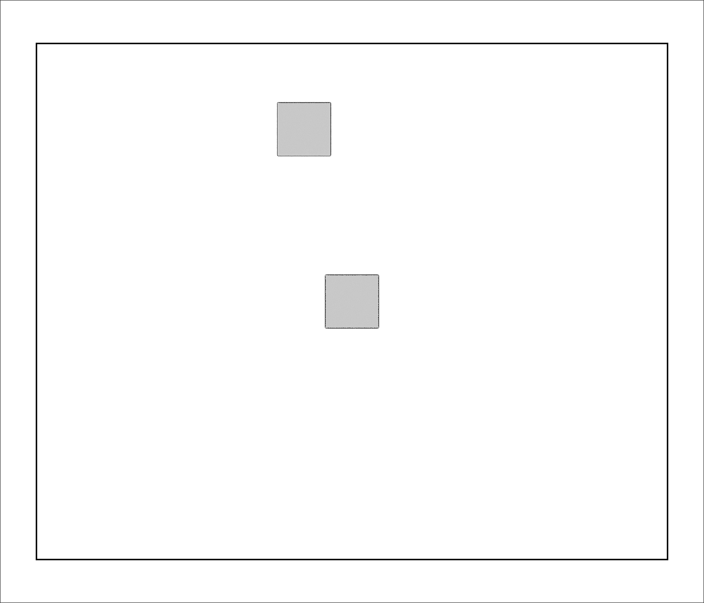
Reflected-ceiling layer: two inferred flush fixtures
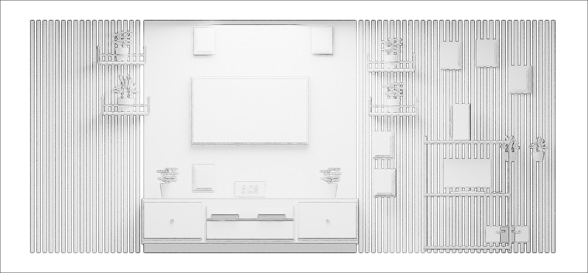
TV wall elevation
- fabric sofa: (-2.08, -0.45, 0.00) m
- leather sofa: (0.20, -2.21, 0.00) m
- marble table: (-0.65, -0.15, 0.00) m
- tv console: (-0.55, 2.42, 0.10) m
- television: (-0.55, 2.60, 1.77) m
- standing fan: (1.03, 1.35, 0.00) m
- computer desk: (2.17, 2.15, 0.00) m
- monitor: (2.17, 2.20, 0.74) m
- computer tower: (2.09, 2.20, 1.40) m
- baby crib: (2.05, 0.99, 0.00) m
- high chair: (2.89, 0.77, 0.00) m
- pet enclosure: (-2.97, 1.11, 0.00) m
- fish bowl: (-2.97, 1.10, 0.49) m
- bass guitar: (2.98, 1.94, 0.00) m
- woven tray: (-0.65, -0.14, 0.84) m
- potted plant: (-0.53, -0.14, 0.89) m
- tissue box: (-0.81, -0.21, 0.89) m
- digital clock: (-0.55, 2.34, 0.69) m
- red flowers: (-1.58, 2.34, 0.69) m
- photo frame: (-1.13, 2.29, 0.93) m
- purple flowers: (0.45, 2.32, 0.69) m
- wall shelf: (-2.15, 2.50, 2.35) m
- yellow flowers: (-2.15, 2.50, 2.39) m
- wall shelf: (-2.10, 2.50, 1.72) m
- potted plant: (-2.10, 2.50, 1.76) m
- wall shelf: (1.21, 2.50, 2.26) m
- yellow flowers: (1.21, 2.50, 2.30) m
- wall shelf: (1.24, 2.50, 1.71) m
- purple flowers: (1.24, 2.50, 1.75) m
- photo frame: (1.96, 2.61, 2.46) m
- photo frame: (2.42, 2.61, 2.49) m
- photo frame: (2.82, 2.61, 2.16) m
- photo frame: (-1.12, 2.61, 2.64) m
- photo frame: (0.35, 2.61, 2.65) m
- photo frame: (1.11, 2.40, 1.34) m
- photo frame: (1.13, 2.40, 0.87) m
- storage bin: (2.58, 2.36, 0.12) m
- storage bin: (2.76, 2.36, 0.12) m
- potted plant: (2.70, 2.43, 1.14) m
- potted plant: (3.05, 2.43, 1.14) m
Main movement route: beside the right edge of the table toward the fan and TV cabinet. Player collision radius: 0.24 m; height: 1.70 m. Minimum planned clear aisle: 0.65 m. Object layouts may change during play. Spawn and reset recover a usable room state.
Openings
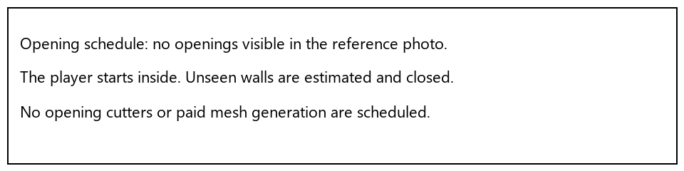
No door or window is visible. This study starts the player inside the room and keeps inferred rear walls closed. No invented exit is presented as a copy of the real house.
Custom object references
All 24 families below are custom procedural Blender meshes, with 40 placed instances. No paid service or credits are used. Studio images are references for approval, not completed photoreal textures.
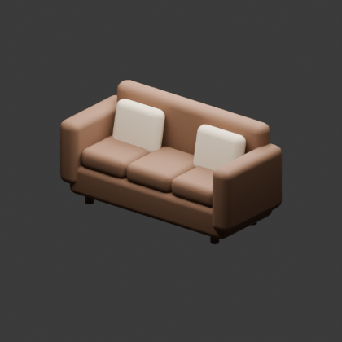
Brown fabric sofa
2.18 × 0.96 × 1.08 m · 1 instances
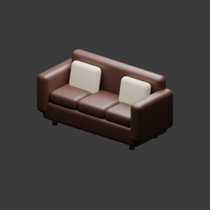
Dark leather sofa
2.18 × 0.96 × 1.08 m · 1 instances
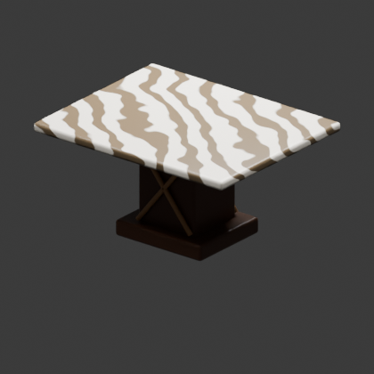
Marble top pedestal table
1.65 × 1.32 × 0.84 m · 1 instances
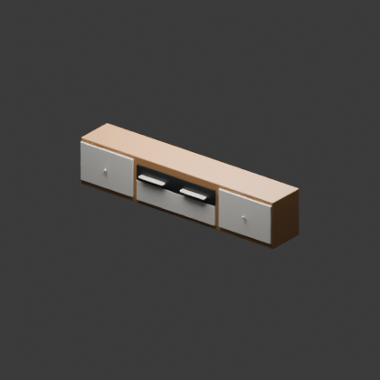
Oak and white TV cabinet
2.7 × 0.5 × 0.58 m · 1 instances
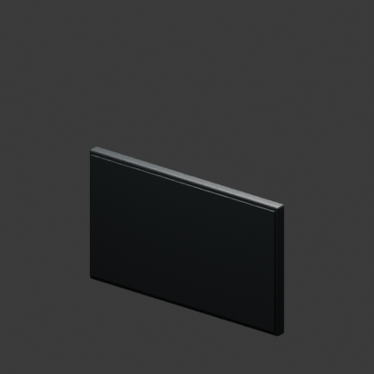
Wall mounted television
1.48 × 0.083 × 0.865 m · 1 instances
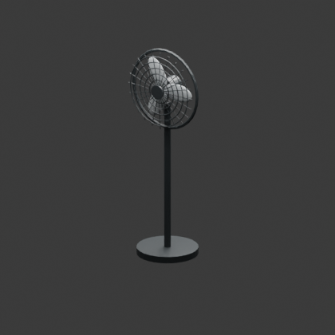
Black pedestal fan
0.6 × 0.55 × 1.6 m · 1 instances
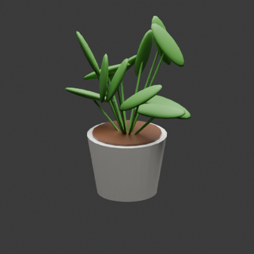
Small leafy plant in white pot
0.36 × 0.36 × 0.43 m · 4 instances
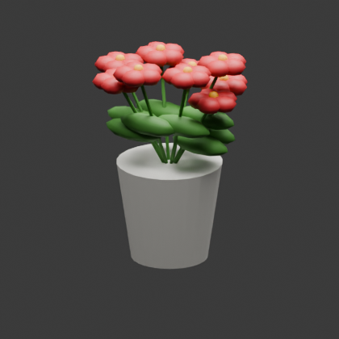
Red flowers in white vase
0.3 × 0.3 × 0.37 m · 1 instances
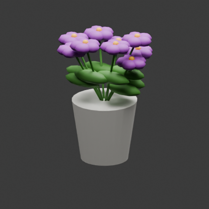
Purple flowers in white pot
0.3 × 0.3 × 0.37 m · 2 instances
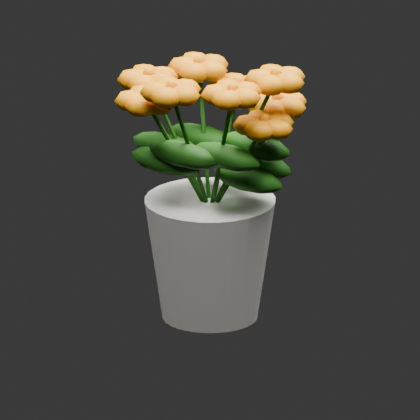
Yellow flowers in white pot
0.3 × 0.3 × 0.37 m · 2 instances
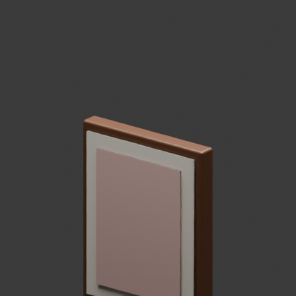
Framed family photograph
0.28 × 0.04 × 0.35 m · 8 instances
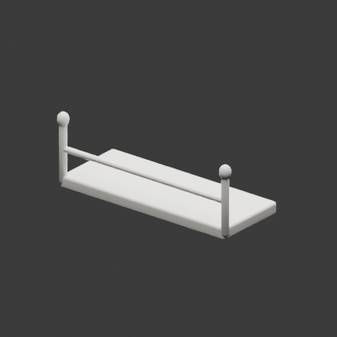
Small white shelf with rail
0.61 × 0.25 × 0.24 m · 4 instances
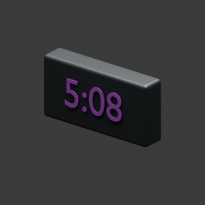
Digital clock showing 5:08
0.39 × 0.09 × 0.2 m · 1 instances
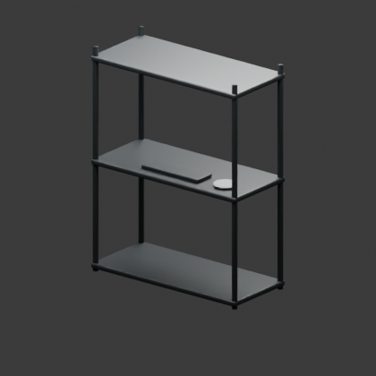
Black metal computer shelving desk
1.14 × 0.53 × 1.45 m · 1 instances
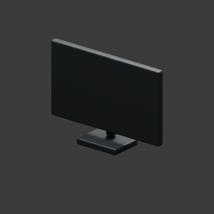
Computer monitor
0.61 × 0.16 × 0.43 m · 1 instances
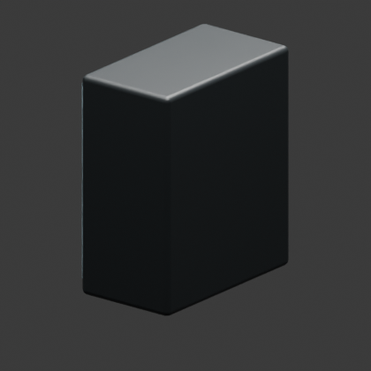
Computer tower with exposed cooling fans
0.25 × 0.41 × 0.47 m · 1 instances
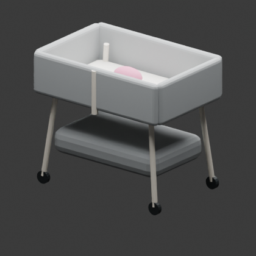
Gray bedside crib with straps and casters
1.07 × 0.7 × 0.97 m · 1 instances
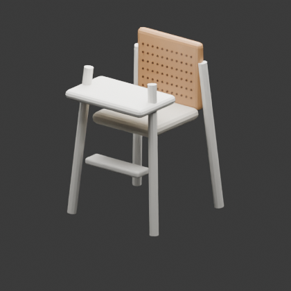
White and rattan high chair
0.65 × 0.72 × 1.07 m · 1 instances
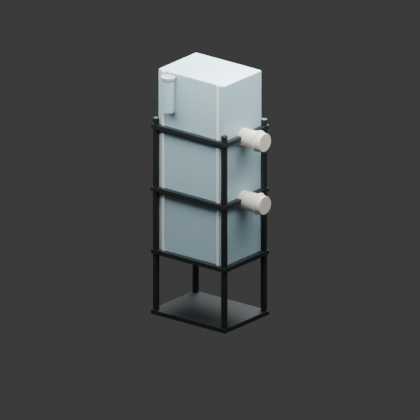
Three level acrylic pet enclosure on black rack
0.83 × 0.52 × 1.87 m · 1 instances
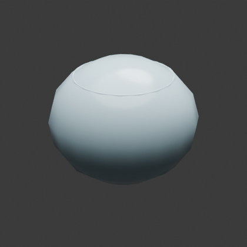
Round fish bowl with plants
0.4 × 0.4 × 0.32 m · 1 instances
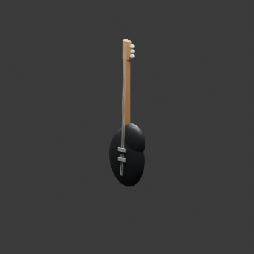
Black bass guitar with maple neck
0.4 × 0.14 × 1.26 m · 1 instances
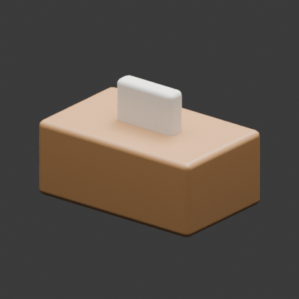
Wood tissue holder
0.24 × 0.15 × 0.16 m · 1 instances
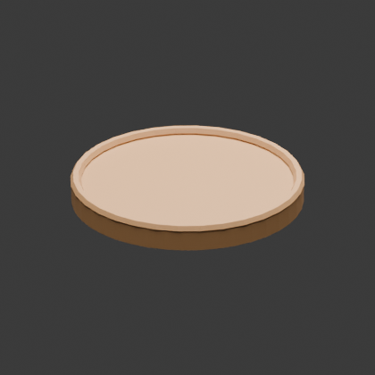
Round woven tray
0.54 × 0.54 × 0.07 m · 1 instances
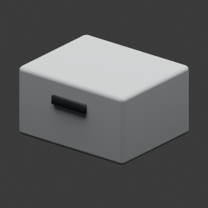
Gray desk storage bin
0.38 × 0.33 × 0.22 m · 2 instances
Gameplay and performance
Desktop: WASD movement, mouse look, E hold/drop, left click throw, J notes, Esc pause. Mobile: left movement stick, right drag to look, Hold / Drop, Throw, and Pause buttons. Mystery: find three hidden clock notes and unlock the TV recording with code 508.
There is a separate control lab in the Godot project for testing these systems while the room awaits approval. It is clearly labeled and is not the final room.
Targets: desktop 60–120 FPS and mobile 60 FPS where hardware permits. Low starts at reduced render resolution with shadows and antialiasing off; Medium and High increase resolution and smoothing. Initial placed prop geometry: 59440 triangles before shell/detail geometry. Use shared meshes, simple compound colliders, sleeping rigid bodies, and bounded grabbing forces. Final FPS claims require measurements on the finished room. No Android phone is connected for a hardware measurement.
Free external texture: Wood Floor by Dimitrios Savva, Poly Haven (CC0). Download preserved under textures; final material use is pending Form review.
Files and review decision
Blender study source · Room brief · Layout manifest · Object manifest · Review record
Review the estimated layout and the 24 object references. The owner explicitly approved the layout and all 24 object references in this chat. Form and Runtime approvals remain separate. No approval is inferred from tests, screenshots, or this page.